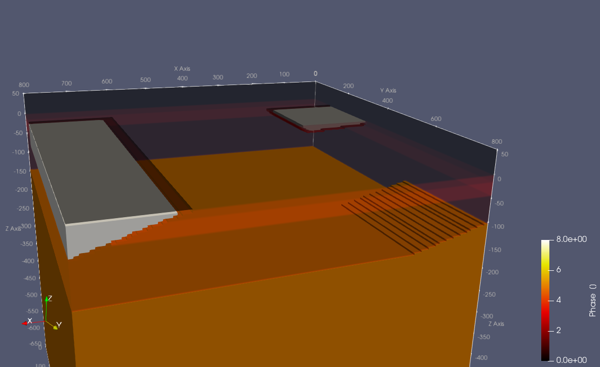

Adding complex geometries to a model setup including sedimentary basins, lithospheric thinning and an accretionary prism
Goal
This tutorial visualizes simplified geological as it is done here for a passive margin where lithospheric thinning, sedimentary basin and accretionary prism occur. The simplification is based on a polygon structure for a pseudo-3D model. While the structure can have a random shape in the x- and z-direction, in the y-direction only the extent is variable.
Steps
1. Set up your simplified background model
Before adding specific geological features, a general simplified model setup is necessary. The construction is made by using the add_box! function. For the model the discontinuities are in 15, 45, 145, and 945 km depth.
using GeophysicalModelGenerator
# number of cells in every direction
nx = 100
ny = 100
nz = 200
# define domain size
x = LinRange(0.0,800.0,nx)
y = LinRange(0.0,800.0,ny)
z = LinRange(-660,50,nz)
Cart = CartData(xyz_grid(x, y, z))
# initialize phase and temperature matrix
Phase = fill(1,nx,ny,nz);
Temp = fill(1350.0, nx,ny,nz);
# add different phases: crust->2, Mantle Lithosphere->3 Mantle->1
add_box!(Phase, Temp, Cart; xlim=(0.0,800.0),ylim=(0.0,800.0), zlim=(-800.0,0.0), phase = LithosphericPhases(Layers=[15 30 100 800], Phases=[2 3 1 5], Tlab=1300 ), T=LinearTemp(Ttop=20, Tbot=1600))
# add air phase 0
add_box!(Phase, Temp, Cart; xlim=(0.0,800.0),ylim=(0.0,800.0), zlim=(0.0,50.0), phase = ConstantPhase(0), T=ConstantTemp(20.0))2. Add polygon structure
To include the geological structures of a passive margin into the model, we use polygons for depths of up to 150 km. In the example, the sediment basin shows a more trapezoidal (2D in x-/z-direction) shape, while the thinning of the plate has a more triangular (2D in x-/z-direction). More complex structures can be build using arbitrarily sized polygons in x- and z-direction, wheraes in the y-direction only the length can be varied (specified by two values). The x- and z-values of the points need to be in the same order for selecting the correct point (P1(1/3), P2(2/2) –> xlim(1,2), ylim(3,2)).
# xlim: x-coordinates of the points, same ordering as zlim
# zlim: z-coordinates of the points, same ordering as xlim
# ylim: limits the object within the two ylim values
# unlimited number of points possible to create the polygon
# add sediment basin
add_polygon!(Phase, Temp, Cart; xlim=(0.0,0.0, 160.0, 200.0),ylim=(100.0,300.0), zlim=(0.0,-10.0,-20.0,0.0), phase = ConstantPhase(8), T=LinearTemp(Ttop=20, Tbot=30));
# add thinning of the continental crust attached to the slab and its thickness
add_polygon!(Phase, Temp, Cart; xlim=(0.0, 200.0, 0.0),ylim=(500.0,800.0), zlim=(-100.0,-150.0,-150.0), phase = ConstantPhase(5), T=LinearTemp(Ttop=1000, Tbot=1100));
# add accretionary prism
add_polygon!(Phase, Temp, Cart; xlim=(800.0, 600.0, 800.0),ylim=(100.0,800.0), zlim=(0.0,0.0,-60.0), phase = ConstantPhase(8), T=LinearTemp(Ttop=20, Tbot=30));3. Export final model setup to a paraview file
For visualisation and comparison to actual measured data, the mode setup is saved to a paraview file.
# # Save data to paraview:
Cart = addfield(Cart,(;Phase, Temp))
write_paraview(Cart, "Sedimentary_basin");After importing and looking at the file to paraview, some unresolved areas might be visible as they are visible in this model. That is due to the resolution and shape of the polygon. To reduce those artefacts an increase in resolution or a change of the polygon angle might help.

If you want to run the entire example, you can find the .jl code here